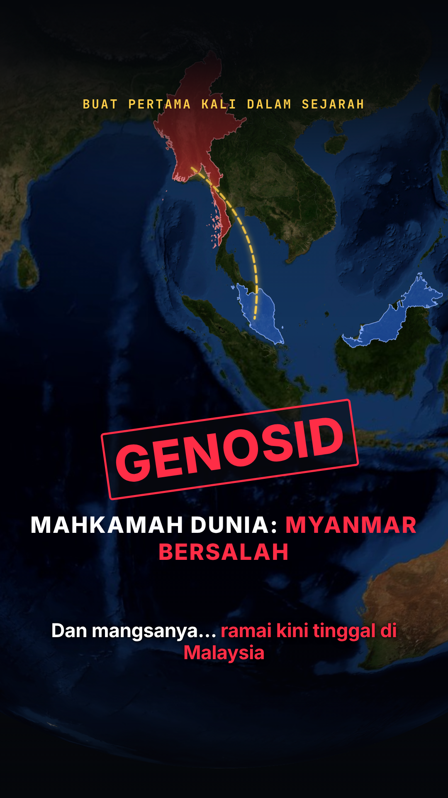
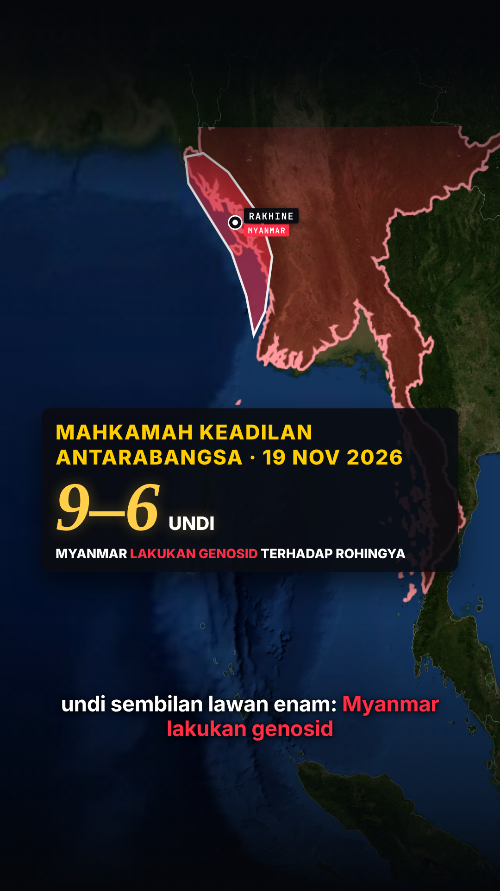
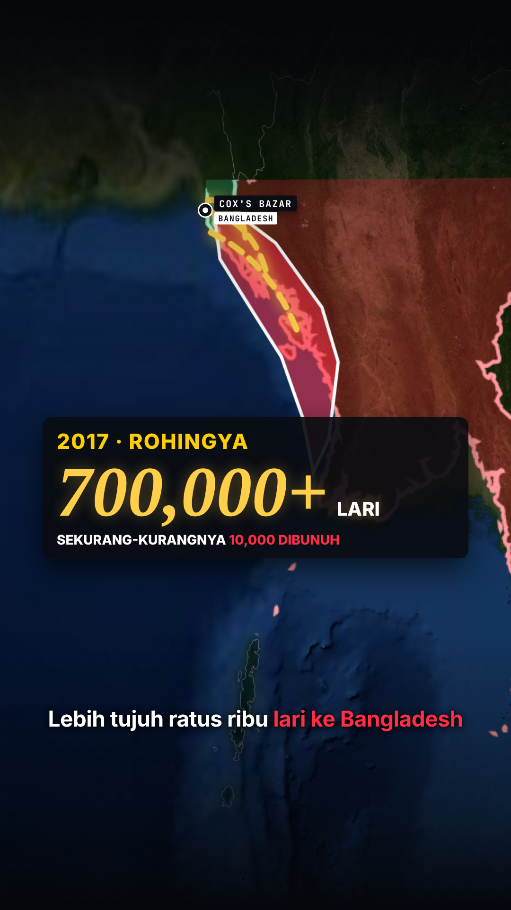
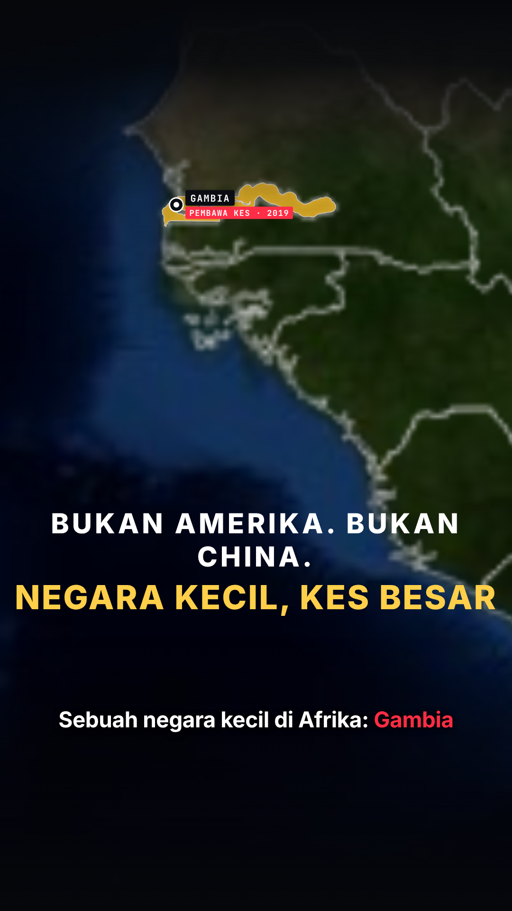
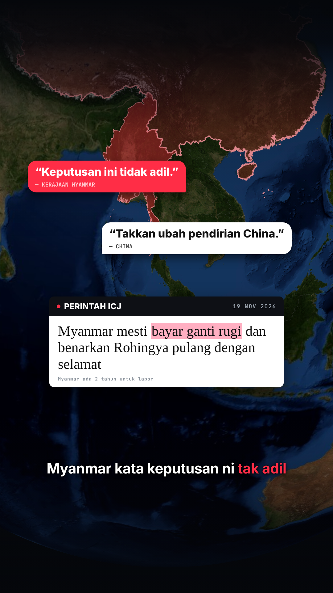
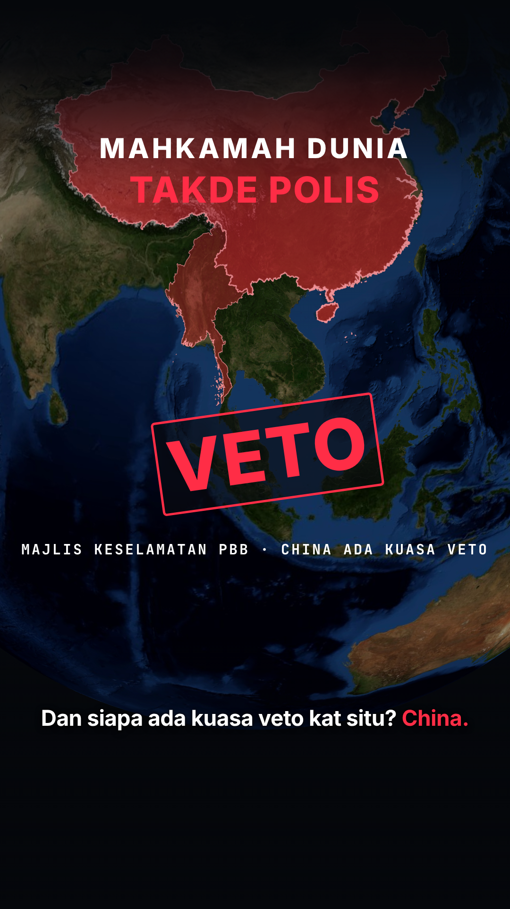
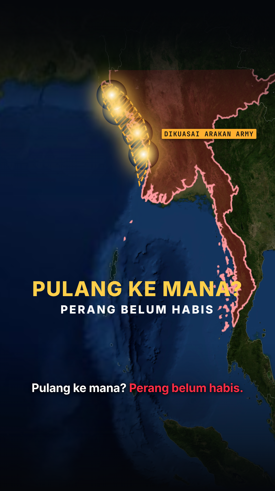
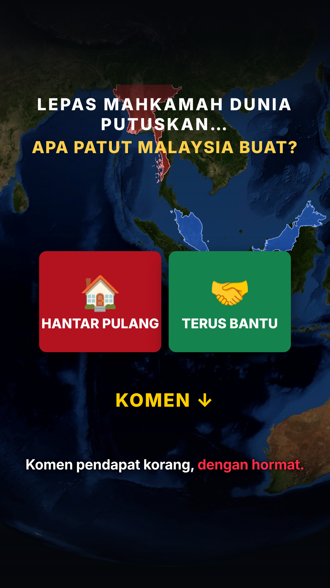

GAYA MAP ANIMATION · 1080×1920 · ~75 s (VO tidak dilajukan) · hook + 3 re-hook · tiada muka mangsa / tiada karikatur · nada fakta, tidak menghasut · subtitle jalur bawah

01 · 0:00
Hook
"Buat pertama kali dalam sejarah… Myanmar… mangsanya ramai kini di Malaysia."
Glob zoom ke Myanmar merah, cop GENOSID menghempas, anak panah emas Myanmar → Malaysia.

02 · 0:09
Keputusan ICJ
"…undi sembilan lawan enam: Myanmar lakukan genosid terhadap Rohingya di Rakhine."
Zoom Rakhine menyala, kad ICJ 9–6 mengira.

03 · 0:17
Mangsa
"Sekurang-kurangnya sepuluh ribu dibunuh. Lebih tujuh ratus ribu lari ke Bangladesh."
Anak panah pelarian Rakhine → Cox's Bazar, kad 700,000+ mengira, 10,000 dibunuh.

04 · 0:23
Re-hook 1 · Gambia
"…bukan Amerika. Bukan China. Sebuah negara kecil di Afrika: Gambia."
Kamera terbang ke Afrika Barat, Gambia emas berkelip. "NEGARA KECIL, KES BESAR".

05 · 0:30
Reaksi
"Myanmar kata tak adil. China… takkan ubah pendirian. Ganti rugi… pulang dengan selamat."
Belon petikan Myanmar & China, kad PERINTAH ICJ dengan highlight.

06 · 0:39
Re-hook 2 · Veto
"Mahkamah Dunia takde polis… siapa ada kuasa veto? China."
China menyala merah, cop VETO menghempas, zoom punch.

07 · 0:47
Re-hook 3 · Pulang ke mana?
"Sebahagian besar Rakhine dikuasai Arakan Army. Perang belum habis."
Rakhine berbelang oren, letupan berkelip, tag DIKUASAI ARAKAN ARMY.
Zoom Malaysia, kad 120,000+, kad laporan HRW dengan highlight.

09 · 1:05
Ending · undian
"Hantar pulang? Atau terus bantu? Komen… dengan hormat."
Undian 🏠 HANTAR PULANG / 🤝 TERUS BANTU, KOMEN ↓, outro.
Caption BAWAH, perkataan demi perkataan · zoom punch pada kata kunci · satu shot kamera berterusan (Myanmar → Bangladesh → Afrika → China → Rakhine → Malaysia) · tiada B-roll